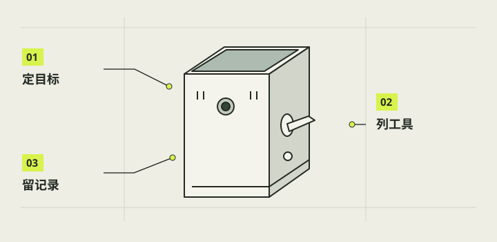

目标与工具准备
这套教程跟随本项目的单摄样机：先让主板、屏幕和相机稳定工作，再加入实体快门与电源按钮，最后装入外壳。动手前先写下你想拍的场景、携带方式和可以接受的体积。目标是做出一台能保存照片、方便维修的相机；外观图和打印件都不能代替真实拍摄测试。

本章完成目标
- 写下一句可验证的拍摄目标
- 备齐断电检查与记录工具
- 建立零件、版本和测试记录
开始前准备好
- 一张平整、干燥且光线足够的工作台
- 知道本项目以 Raspberry Pi 3B+ 为主板
- 暂不把任何新线接到带电主板
- 样机
- 用来验证功能和装配关系的第一台实物，不等于最终量产产品。
- 验收
- 按预先写好的动作和可观察结果，确认一个功能在真实设备上成立。
把拍摄目标写成动作
用一句话写清用途，例如带出去拍街景、旅行和日常记录；再写下最小成功动作：开机看到取景，拨一次杆得到一张能打开的照片，照片保存后再关机。把构图、握持和屏幕观看角度列为后续实机检查，不把渲染图的好看程度当成功能通过。
注意 / 不要把尚未实现的 RAW、自动对焦或电量百分比写成现有能力。
整理工作台
备防滑垫或干净托盘，给主板、摄像头、屏幕、排线与螺丝各留一个位置；旁边留出整机和线束展开空间。拍照记录拆装前的朝向，给插头、线束和打印件做可移除标签。小螺母单独收好，避免滚入主板接口或触点。
注意 / 整理时先断开电池、充电线及其他供电。
准备检查工具
准备能量通断和直流电压的万用表、合适螺丝刀、绝缘材料、照明与拍照设备。若需要制作接头，再根据真实端子选焊接工具、热缩管和应力释放方式；不要因为商品图有扁焊片，就假设普通杜邦母头能夹牢。细杜邦线只作合适的低电流信号连接，不走整机主供电。
注意 / 通断档只用于已经完全脱离电源的线路。
建立版本与证据表
为每项记录零件型号、来源、实物照片、软件版本、实际测试日期与结果。把“商品标称”“用户反馈”“日志记录”和“助手目视核对”分列；一个结果只覆盖当时的配置。外壳 STL、切片工程和已打印实物也分别记版本，别把同名零件自动视为同一尺寸。
注意 / 公开教程不记录私人网络地址、账号或设备日志原文。
划定第一轮测试边界
第一轮只验证主板启动、屏幕显示与触摸、相机识别和一张 JPEG；随后再逐个加入拉杆、按钮和灯。每新增一条功能线，先记录旧配置是否正常，再在断电状态接入新件。测试表里保留“未测”一栏，让不确定的环节继续可见。
注意 / 软件离线测试、网页预览和结构 CAD 检查都不能替代整机实测。
完成后，逐项打勾。
勾选帮助你记录进度，不代表项目替你完成了实机验收。
遇到问题，从这里排查。
零件来源或版本对不上
停在清点阶段，查包装、实物标识和原始记录；先补标签，不凭外观硬装。
准备工具与端子不匹配
先量端子并选适配接头，保留现有合格线束，不让松动临时连接承担整机供电。
本项目的实际进展
- 本项目首台目标是自用的可携带拍照相机；目前的公开教程按 Pi3B+ 样机组织。
- New Cam 1.0 曾遇会话目录权限失败；2026-10-29 较新的实机修复安装报告已显示 success=true、status=staged，boot 与 session 已配置，仍待下一次正常开机及完整功能回归。
资料与核对依据
- 项目需求交接 · camera-project/A-PRD/handoff.md
- C 软件最新交接 · camera-project/C-软件/handoff.md
- 器材台账 · camera-reference/inventory/inventory.md
- New Cam 1.0 实机修复安装报告 · camera-project/C-软件/qa/newcam-1.0/device-reports/20261029-005057-v1-repair-install-summary-c43f833093b74b8883b4a79df80f5062.json
资料核对日期：2026-10-30。不同硬件、系统版本和材料需要重新验证。